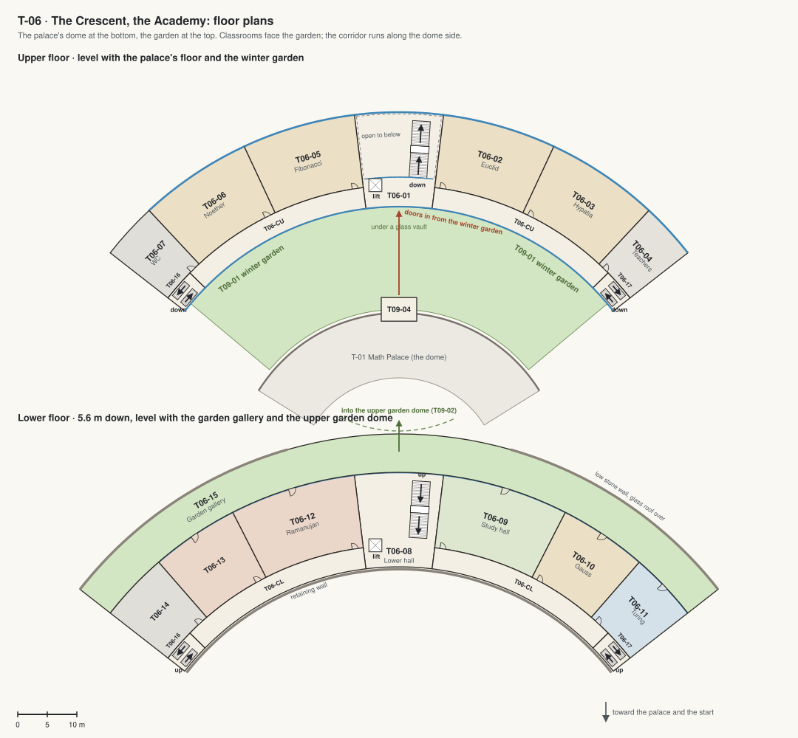

T-06 · The Crescent: the Academy
Six classrooms named after mathematicians, a study hall, a competition room, a games room and lounge, the teachers' room and washrooms on both floors, in a crescent that wraps the back of the dome. The upper floor opens onto the winter garden; the lower floor onto the garden gallery and the garden domes.
Big rooms with high ceilings (Jim, 5 Oct 2026: "class rooms are all too small and roof are too low. feels depressed"): each classroom about 17 m by 12 m under a ceiling 4.5 m high; the floors 5.6 m apart; the hall two storeys tall.

| Code | Room | What it is for | Size |
|---|---|---|---|
| T06-01 | Hall and stair | The way in from the winter garden and down to the garden gallery: a hall two storeys tall with a wide stair and a lift, the timetable on a screen, long benches. Also: Exhibitions of students' work. | 210 m² |
| T06-02 | Euclid | Classroom for geometry: 30 seats at double desks, a whiteboard wall, compasses and models of the solids. Also: Evening classes for adults. | 220 m² |
| T06-03 | Hypatia | Classroom for algebra and measurement: 30 seats, two whiteboards, a demonstration bench. | 220 m² |
| T06-04 | Teachers' room | Desks for the teachers, a meeting table, a kitchenette, lockers and a long sofa. Also: Marking and lesson planning. | 110 m² |
| T06-05 | Fibonacci | Classroom for number patterns: 30 seats, a wall of sequences and spirals. | 220 m² |
| T06-06 | Noether | Classroom for symmetry and abstract algebra: 30 seats, a wall of tilings. | 220 m² |
| T06-07 | Washrooms | Washrooms for the upper floor, above the lower ones; a cleaner's cupboard. | 110 m² |
| T06-CU | Upper corridor | Along the dome side, with glass onto the winter garden; the emergency stairs at both ends. | 230 m² |
| T06-08 | Lower hall | Under the hall's gallery: glass doors out to the garden gallery and the garden domes. | 210 m² |
| T06-09 | Study hall | A quiet room for homework: 40 carrels with lamps, a librarian's desk, shelves along the corridor wall. Also: Exam room. | 240 m² |
| T06-10 | Gauss | Classroom for statistics and data: 24 seats at tables with screens. | 170 m² |
| T06-11 | Turing | Computer classroom: 16 workstations for coding and modelling. | 130 m² |
| T06-12 | Ramanujan: competition room | Math olympiad training and contests: team tables, a scoreboard on the wall, a stage for the problem reader. Also: Chess tournaments. | 240 m² |
| T06-13 | Games room and lounge | Chess, Go, puzzles and math games at tables, shelves of games, a Rubik's cube wall; long sofas and a coffee machine by the glass onto the garden gallery. Also: Clubs after school. | 170 m² |
| T06-14 | Washrooms and store | Washrooms for the lower floor and a store for chairs and teaching kit. | 130 m² |
| T06-CL | Lower corridor | Along the dome side, against the slope; the emergency stairs at both ends. | 230 m² |
| T06-16 | West stair | An enclosed emergency stair at the corridors' west end, between the floors, behind fire doors. | 39 m² |
| T06-17 | East stair | The same at the east end. | 39 m² |
| T06-15 | Garden gallery | The court along the whole garden front, under a sloping glass roof from the Crescent's eave to a low stone wall: planters, benches, the doors of every lower room; in the middle it opens into the top garden dome. | 770 m² |